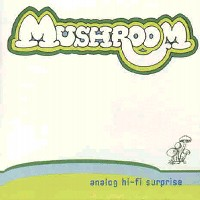
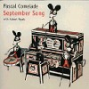

#えーとジャケとバンド名が余りにも気に入ったので、買いました。あと曲のタイトルがやたらと長い人達って結構好きな確率が高いので。
"produced by Patrick O'Hearn"って書いてあるからザッパ関係のバンドかなと思ったら....思ったらこのPatrick O'Hearnはドラム叩いてました(ザッパバンドの方はベース)どうやら同名の別人みたい。
ちょっとサイケな...いわゆるジャムバンドってヤツみたい、ジャケット買いにしては久々のヒットです。キーボードの人のちょっとキチガイっぽいセンスが好きかも3曲目なんて延々メロトロンだし。

- The Magic Of Michael
- Rackets
- October 1970
- Our buddy Miles
- A song of remembrance for a time when wife swapping was considered politically correct
- The evolution of smells in an underground parking garage after an all night rave
- Abbie Hoffman
- Michael Holt (rhodes,mellotron)
- Erik Pearson (snake guitars,flute,sax)
- Graham Connah (organ,keyboards,analogue sounds)
- Patrick O'Hearn (drums,bongos,percussions)
- Alec Palao (bass)
- Dan Olmstead (guitars)
EFA: 05414-2 (1999)
#Robert Wyatt参加のミニアルバム。P.コムラードはトイピアノとか色々な楽器を使って可愛いんだけどちょっとねじれた音楽を作る人(って感じに私は思ってます)です。
やっぱりWyattの歌が落ち着いた感じでとても良いのですけど、
マッチングモウルの曲もやっていて、改めて面白い曲だなとか思いました。(2001.6.6)

- September Song
- Signed Curtain
- Come Prima
- The Sheik Of Araby
- 24 Mila Baci
- Knockin' On Heaven's Door
- L'italiano
music by
Anderson,Well (1.)
Wyatt (2.)
Panzeri,Taccani,Di Paola (3.)
Synder,Wheeler,Smith (4.)
Celentano,Vivarelli,Fulci (5.)
Dylan (6.)
Minellono,Cutugno (7.)
- Pascal Comelade (accordions,piano,ukulele,guitars,flute,organ)
- Patrick Felices (double bass on 3.5.)
- Richie Faret (harp on 5.)
Disques du Soleil et de L'Acier: 7243-8496562-4 (2000)